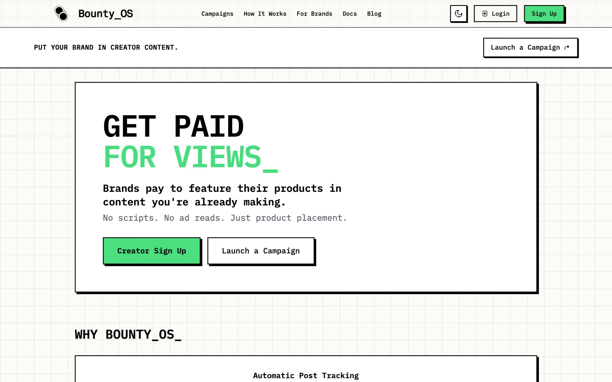
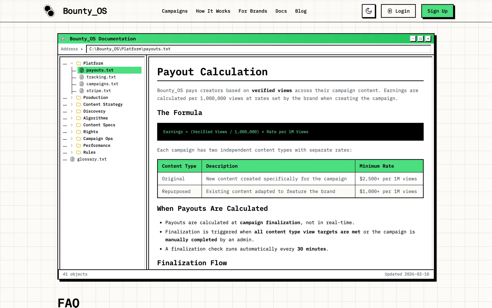
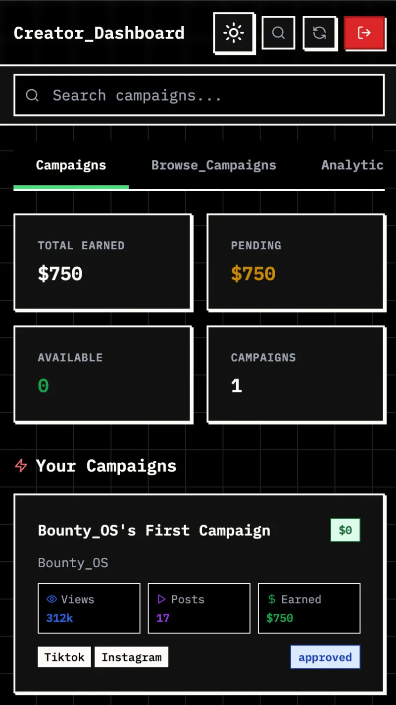
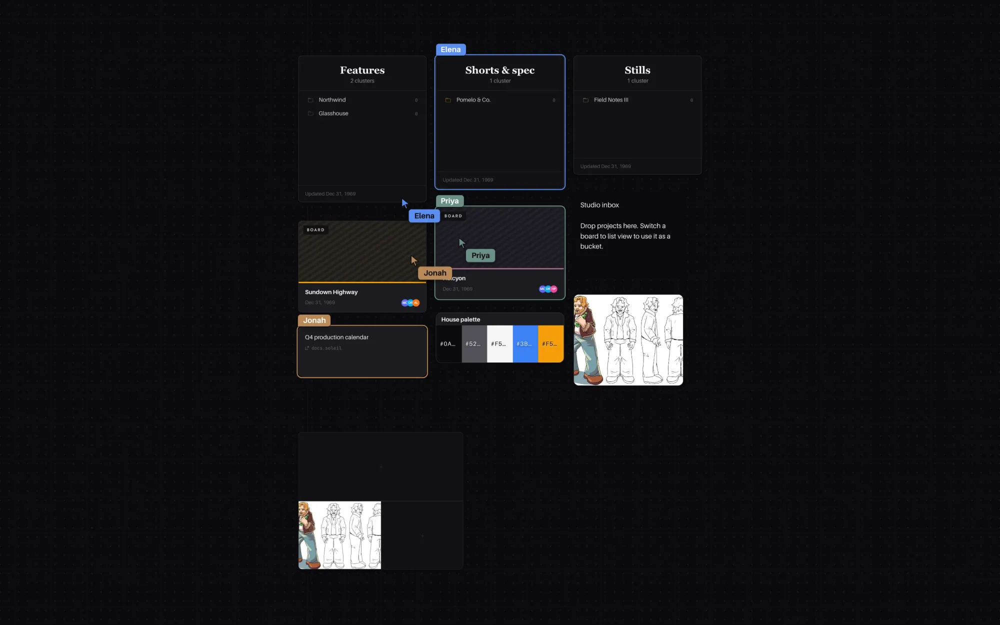
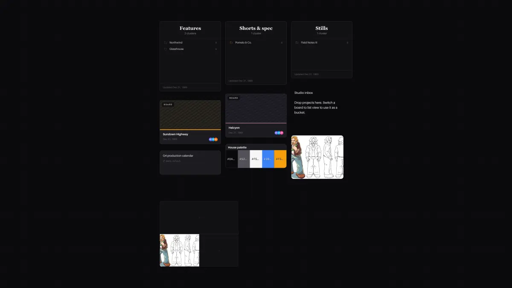
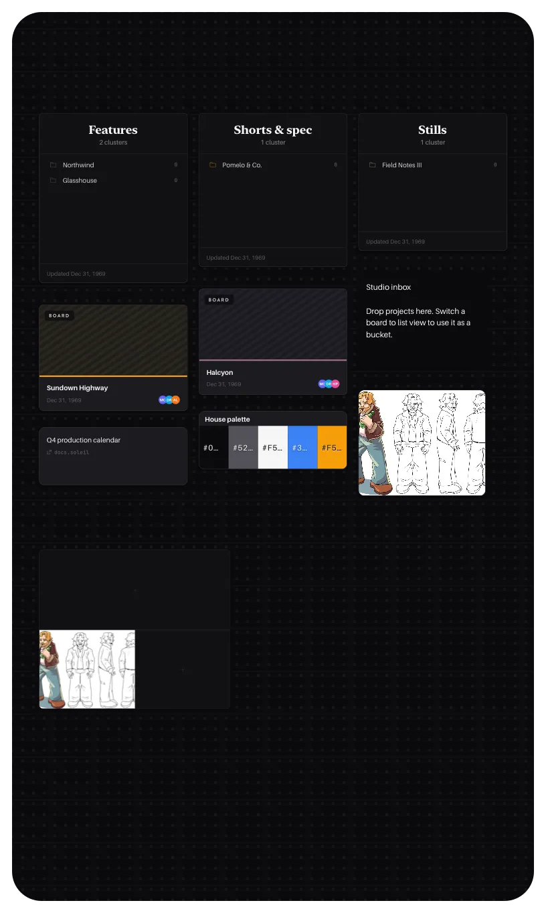
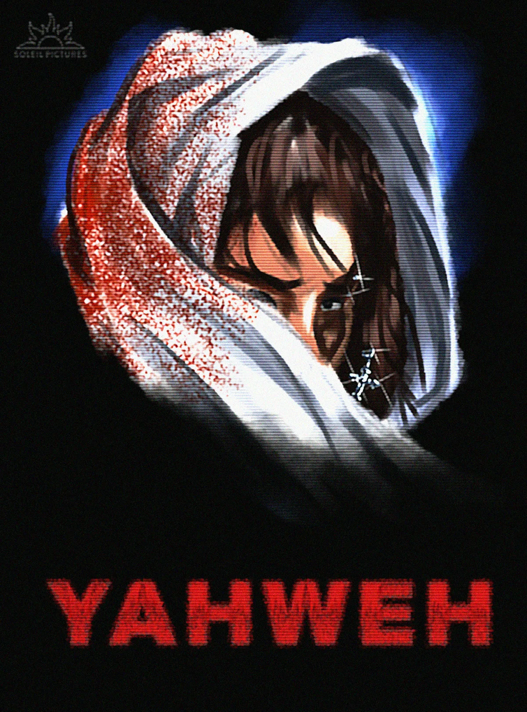
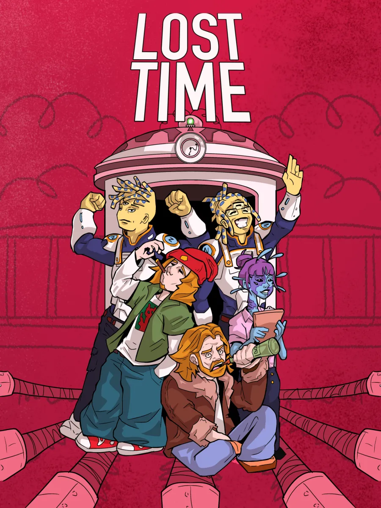

Two production SaaS products, a film studio, and a decade of making things people watch. Every product here was designed, built, shipped, and grown by one person. Every number below traces to a repository, a database export, or a live page.
Brands pay per view. Creators feature the product inside content they were already making, add a campaign hashtag, and Bounty_OS finds the post, counts the views, and pays out through Stripe. No follower minimum, no scripts, no ad reads.
100,000views = one block
creators are paid on complete blocks
$150brand pays, for 150,000 views
at a $1,000 per-million rate
$100creator earns, one full block
the partial block is the margin
the machine · 1
It finds the post itself.
A campaign hashtag is the only handshake. Posts are discovered and scraped across TikTok and Instagram, ownership of 373 social accounts was verified automatically, and a five-tier velocity scheduler decides how often each post is re-measured, documented at roughly 49% fewer API calls.

the machine · 2
Fraud detection inside Postgres.
A Gaussian naive-Bayes bot detector written in pure PL/pgSQL, with sigmoid calibration and self-retraining population statistics. Review is importance-sampled by creator reputation, and reputation itself is a trigger: +0.05 per approval, −0.10 per rejection, so it cannot drift from outcomes.

the machine · 3
Money that reconciles.
Escrow and payouts through Stripe Connect, a resumable nine-step campaign-finalization saga, integer cents end to end, and a double-entry invariant checked continuously: total_earned = pending + available + paid_out. Optimistic locks and a circuit breaker stand between a bad batch and a double release.

the machine · 4
Copy that optimises itself.
Lifecycle email runs on a Thompson-sampling bandit over 85 variants, with a hand-rolled Beta sampler in an edge function. Landing pages run epsilon-greedy. The top variants clicked at 2 to 2.5× the blended rate.
the machine · 5
A public surface most seed startups never build.
41 documentation pages in a Windows-95 explorer, an earnings calculator, a public campaign directory, six comparison pages, ten niche landing pages, a 5% referral program, a blog, a live investor pitch page, prerendering, JSON-LD, and an llms.txt so the assistants can read it too.
A real-time canvas for film teams. Driveable by an agent.
Moodboards, shot lists, lookbooks, scripts, and schedules on one infinite canvas, edited live by everyone on the production. Built by a film studio for its own work, then opened up: a public API, its own OAuth server, and an MCP server so an AI assistant can build a board for you.
the canvas, establishing shot · 8 s, no soundshot by the product's own capture mode
engineering · 1
Real time, done properly.
Yjs CRDTs over PartyKit, one Durable Object per board at the edge. Every connection is authenticated with a Supabase JWT and checked against row-level security before it joins; viewers are read-only at the protocol level. Every update is appended to a per-board op log, compacted hourly into R2, and an in-room anomaly detector watches for mass deletes.

engineering · 2
Built for agents, not just people.
50 REST endpoints, 18 OAuth 2.1 endpoints, 9 webhook events, and an MCP server with 33 tools and 3 prompts, published to the official MCP Registry as com.soleilpictures/clusters and to npm as soleil-clusters-mcp. The hosted endpoint signs you in over OAuth, so there is no token to paste.

engineering · 3
Native, without a second codebase.
Capacitor shells for iOS and Android wrap the same Vite build. And Scout: text photos, clips, voice notes, PDFs, or links to a number and they land, arranged, on a canvas; voice notes are transcribed and photos keep their capture time. It runs on Fly.io because iMessage needs gRPC, which a Worker cannot speak.

engineering · 4
AI where it earns its keep.
OpenAI embeddings into pgvector with an HNSW index power semantic search and auto-tagging. Cloudflare Workers AI writes grounded SEO copy and image alt text on the free tier. A weekly probe asks an assistant the questions a buyer would ask and records whether Clusters gets cited.
engineering · 5
A growth stack most startups buy.
A deterministic A/B harness stamped on every event. A lifecycle-email bandit with per-user send-time optimisation. A referral loop with k-factor tracking. Attribution across 11 click-IDs on 8 ad networks, Meta Pixel with server-side Conversions API, a daily Search Console sync, a six-hourly production prober, and IndexNow.
engineering · 6
Docs that cannot drift.
A CI test extracts the public surface straight from source, endpoints, MCP tools, card kinds, settings tabs, hashes it, and fails the build if the docs were not updated. Every number in the docs is injected from the code that enforces it. The crawler-facing HTML and the React page render from the same parse.
Soleil Pictures LLC (Georgia, 2024) develops original features and television. It is also where Clusters came from: the tool was built to run the studio’s own productions, then offered to everyone else’s.

YAHWEH
feature · in development · action thriller
After surviving a brutal mob execution, an ill-fated man with religious psychosis reimagines himself as a messiah, Yahweh. As he gets his revenge, he gets entangled in a world of corruption.
Salva, an office worker, senses an unusual shift at his job; he realizes his coworkers are part of a clandestine experiment by a pharmaceutical company.

Lost Time
tv series · pre-production · historical dramedy, sci-fi action
After stealing a time machine, a reckless drunk juggles trying to live with his past self while going on adventures throughout time.
the paper trail
business plan · marketing plan, Deep Dive
mar 2024
shot-direction frames, Deep Dive office scene
24
Deep Dive proof-of-concept short, co-written with Christopher Perez
jul 2025
show bible, Lost Time
written
posters, designed in-house
2026
Georgia LLC organized
aug 2024
future studio · a model you can argue with
A gated page at soleilpictures.com/future-studio models a film studio and a theme park sharing one island as one business: an interactive map, a pro forma, and a situation room built from a 90-entry idea ledger, with 147 test assertions guarding the economics. It records where the plan fails as carefully as where it works.
Both products exist because the funnel was already familiar: recruit creators, verify them, nudge them into posting, measure the post. That was the job first.
WorldStar HipHop
marketing director · jun 2021 – aug 2022 · age 17
Directed influencer and social campaigns for artist releases with a three-to-four-person team. One fully documented TikTok creator campaign: 48 creator videos, 956,650 views, $7,750 spend, $0.0081 per view, best creator at $0.0016. Seeded releases through a 14.6-million-follower Instagram meme-page pool with per-post view, engagement, and ROI tracking. Took an artist from 20K to 250K Spotify monthly listeners in six months.
Freelance
social growth & management · 2018 – 2023
Grew an Instagram page from 0 to 35K followers organically. Produced music-production content that earned 1M+ organic TikTok views. Managed pages totalling 550K+ followers.
Rise Studios · Just Peachy Locations
social media marketing consultant · aug 2024 – jul 2025
Organic-growth and content strategy for two Atlanta production businesses, and trained their teams on content workflows and performance optimisation.
Georgia Entertainment
event photographer & journalist · oct 2024 – sep 2025
Documented Atlanta’s entertainment scene on assignment.
Swoon Esports
founder · sep 2019 – nov 2020 · age 15
Built a 5K+ community, ran online tournaments for hundreds of participants, and managed branding and operations for semi-professional teams in Rocket League, Rainbow Six Siege, and CS:GO.
Acting is where the products came from: the studio needed tools, and the person on set built them. Working actor since 2023, training in Chubbuck, Meisner, and at Michelle Danner’s studio.
Making beats since 2020. In late 2024 the single “It All Falls” went out under his own label, Soleil Records, with the whole release kit self-made: vertical video, TikTok spot, Spotify canvas. The music-production content around it is where the 1M+ organic TikTok views came from.
07other buildssimulation · games · tools · 2023 → 2026
The rest of the shelf.
Not products. Practice, curiosity, and the occasional two-day sprint that turned into eighteen thousand lines.
simulation · rust, python, c++
Project Genesis
An emergent-behaviour civilisation simulator where every citizen is an autonomous agent with memory and interests, and the player is the president. Fourteen Rust crates (24,912 lines, 275 tests, 90 systems), a PyTorch pipeline that trains tiny agent brains, and an Unreal Engine 5 client. Then re-implemented as a 78-commit Cataclysm: DDA fork that runs the city in spectator mode with policy dials.
apr – aug 2026 · 139 + 78 commits
game · luau, roblox
Rocklords
A PvP rock-collection game: mining, refinement with a wager feel, fusion trade-ups, theft, auto-miners for offline progression, procedurally generated mythical rocks players get to name. 18,107 lines of Luau across 39 server modules, 126 tests, a 20-section design spec, and a Rojo, Wally, StyLua, Selene toolchain.
written in two days, apr 2026 · unpublished
model · next.js on the edge
Future Studio
A studio-plus-theme-park island as one business, rendered as a map, a pro forma, and a situation room from a 90-entry idea ledger. Gated at the edge, with 147 test assertions on the economics. soleilpictures.com/future-studio
aug 2026 · live
automation · python + claude
Investor research pipeline
Researches investor candidates, de-duplicates them, scores and ranks them by configurable weights, writes them to a sheet, builds a digest, and verifies employment, on a launchd schedule. 53 tests.
mar – apr 2026
prototype · next.js
Create OS
The February 2025 prototype of what became Bounty_OS: brands fund a budget for views, creators onboard and choose how to get paid. 103 commits and a five-step campaign wizard, a year before the company existed.
feb – mar 2025
data · cloudflare workers + d1
Cast & crew database
A movie, credit, and person database on Cloudflare D1 with a search front end on soleilpictures.com, fed by a TMDb crew scraper. Built to answer one studio question: who worked on the films we love.
mar 2024
personal · one html file
Film rankings
A 4,067-line Classic Mac OS desktop for rating films: TMDb search, IMDb, Rotten Tomatoes and Metacritic pulled into a weighted public score, a watchlist with streaming providers, a rating-distribution chart, a startup chime, and flying toasters when it idles. Lives on this site, behind a password.
feb – mar 2026 · 57 commits
this page
andrewconklin.com/portfolio
One HTML file, no framework, no build step, like the rest of this site. The sticky showcases, count-ups, morph, and reveals are about two hundred lines of vanilla JavaScript, and all of it switches off under prefers-reduced-motion.
Every number on this page was checked on 20 September 2026 against the repository, the dated production-database export, or the live page it names. Bounty_OS and Soleil Clusters are early-stage products; nothing here is a revenue claim. Screen credits are from the current acting résumé. Product shots are the products as they run today. Built solo, with Claude Code as a daily collaborator, in one file.